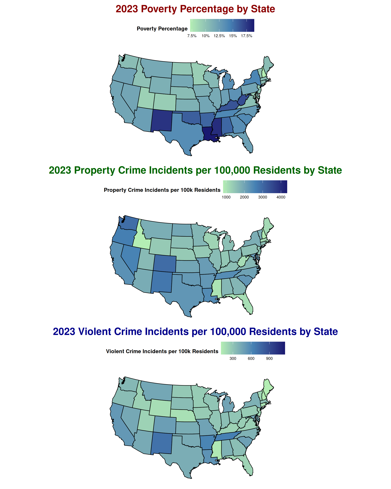

Possible Relationship Between Poverty & Crime in Dillon County South Carolina
Data Viz
Summary: Data Visualization Redesign Project.
Introduction
The task of this project is to find an existing data visualization, critically analyze its context and shortcomings, create multiple improved redesigns to reveal new patterns, compare the effectiveness of the original and redesigned plots, and provide thoughtful commentary on the process, challenges, and potential next steps while providing a story we can tell from the data.
Original Graphic
The visualization shown above (see Figure 1) is the original graph that we chose for this redesign project. This visualization was taken from a website that identified multiple examples of data visualizations that do not follow best practices. Just at first glance, we can very quickly determine that there is a lot going on in this graph. In fact, there is too much going on to the point that it is hard for the audience to understand the intended story behind the graph.
The Good
- The chart attempts to track three variables (property crime, violent crime, and poverty rate) in the same visualization which can be insightful to examine their intertwined relationships.
- Using bubble charts is actually not a bad idea here and when used well it can actually be insightful allowing for proportions to be distinguished.
The Bad
On the other hand the chart did not do a great job in portraying the data in such a way that the audience can easily interpret and did poorly is several areas:
- The bubble radius for the poverty variable has no numeric reference, so even though they are comparable between states, any single radius has no meaning on its own.
- Additionally, there is no title of the graph so it is unclear what timeframe this data is coming from.
- The state labels are messy and hard to read
- The units could be more explicit.
- The color choice is not the best.
Overall, there are several changes that can be made to this original graph to better illustrate the data and the message.
Our Proposed Redesign
In our redesigns, the primary goal is to make the visualizations easier to understand than the original graph. This entails reducing the level of effort needed to interpret the visualizations. There are some elements of the original graph that had good intentions behind them though, that are worth incorporating in our redesigns but we will also include several improvements and extensions to the original in several ways:
- The concept of tracking three variables in the same visualization can be insightful to examine their intertwined relationships. However, we can implement this concept more effectively by simplifying variable visuals and reducing overall visual clutter within the graph.
- Additionally, we can create multiple graphs side by side for comparison between these variables, with each graph focusing on only one or two variables.
- For another example, the concept of comparing variables between states is important in telling a story about the data. However, we can implement this concept more effectively by cleaning up the state labels and even utilizing a different element, such as a color gradient, to differentiate between the multiple poverty levels.
- Additionally, we can even move away from classic dot plots and explore plotting this data on a map, as most readers are familiar with a map of the US.
These are just some of the various solutions that we implemented in our redesigns.
Data Sources
The original chart did not cite its data source. Given the topic (crime and poverty rates), we assumed the data should come from authoritative databases. For this redesign, we performed substantial data preparation (described next) using the sources listed below:
- FBI Crime Data API2.
- The United States Census Bureau3.
A Note On Data Wrangling
We pulled 2023 data from two APIs—the U.S. Census Bureau (population and poverty) and the FBI Crime Data API—and used the Polars Python library to clean and reshape it into an analysis-ready dataset. The Census API let us retrieve state- and county-level values in a single request for 2023, but some counties lacked population (and therefore poverty rates), and a few areas (e.g., Louisiana) were missing from the pull.
For crime, we queried two FBI endpoints roughly ~50,000 times using ORIs (Originating Agency Identifiers) that uniquely identify police agencies within counties. After fetching, we joined the Census and crime records on state and county, then performed the required aggregations and calculated per-100,000 incident rates.
Key Metrics & Derivations
This project uses three key metrics namely:
Poverty rate
\[ \text{PovertyRate (\%)} \;=\; \frac{N_{\text{below poverty}}}{N_{\text{poverty universe}}}\times 100 \]
(As a proportion: ( = ).)
Property crime incidents per 100,000 residents
\[ \text{PropertyCrimeRate}_{/100k} \;=\; \frac{N_{\text{property incidents}}}{N_{\text{population}}}\times 100{,}000 \]
Violent crime incidents per 100,000 residents
\[ \text{ViolentCrimeRate}_{/100k} \;=\; \frac{N_{\text{violent incidents}}}{N_{\text{population}}}\times 100{,}000 \]
\[ \begin{aligned} \textbf{Where:}\quad & \\ N_{\text{population}} &:= \text{total population}\\ N_{\text{below poverty}} &:= \text{count below poverty}\\ N_{\text{property incidents}} &:= \text{total reported property crime incidents in the period (e.g., 2023)}\\ N_{\text{violent incidents}} &:= \text{total reported violent crime incidents in the period (e.g., 2023)} \end{aligned} \]
Original Graphic Redesign
The goal of our first redesign is to recreate the original graphic keeping most elements the same, but with improved labeling, less visual clutter, and clear interpretation of the poverty variable. More specifically, we will add a title that explains the nature and origin of the data, use a color gradient to differentiate between poverty levels, and transition the state labels to an interactive element of the visualization.
Note that we can quickly see that the District of Columbia (DC) has significantly more crime incidents (both property crime and violent crime) than any US state, which stretches the scales of the axes. Let’s recreate this graph, excluding the outlier data point of DC, so that we can identify potential trends between the 50 states more clearly.
Now let’s analyze the redesign shown above. When viewing this visualization, we can identify a positive relationship between property crime and violent crime much easier than in the original graphic. In other words, the more property crime incidents a state experiences often correlates with more violent crime incidents. Additionally, it is worth taking note that there are multiple states with higher poverty percentages scattered throughout the plot (look at Mississippi, West Virgina, Kentucky, Louisiana, and New Mexico).
Alternative Data Visualization - Using Bar Charts
There are several alternative ways to illustrate the same information from the original graphic. The redesign below portrays the same data but in a familiar way by using two bar charts side by side, with one for property crime data by state and one for violent crime data by state. One positive of this type of visualization is that the state abbreviation labels are clearly displayed without requiring any interactive elements. Another positive is that these bar charts allow for even easier comparisons between state data, as states’ bars are arranged by their property crime data.
When comparing the two bar charts, the previously identified positive trend between property crime and violent crime is shown, although it is not exactly linear. Upon examining the visualization more closely, it is interesting that Mississippi exhibits relatively low property crime and violent crime given its high poverty percentage. Conversely, it is interesting that Colorado has such a low poverty percentage given that it exhibits higher property crime and violent crime. This could indicate the lack of a substantial relationship between poverty percentage and crime incidents (property crime and violent crime) at the state level.
Alternative Data Visualization - Using Poverty as Dependent Variable
While our previous graphs highlight more of the relationship between property crime and violent crime, the goal of the visualization below is to succinctly investigate the relationship between poverty and crime, by tracking poverty percentage as the dependent variable instead of a color gradient. This is done by creating two separate scatterplots side by side, one for property crime versus poverty and one for violent crime versus property.
When analyzing these scatterplots of state-level data, we cannot identify a clear correlation between property crime and poverty, while only a slightly positive correlation between violent crime and poverty is observed. This confirms our suspicion that there is no substantial relationship between poverty percentage and crime incidents (property crime and violent crime) at the state level based on our data. Given this information, let’s visualize the data in one more way before determining the next steps.
Comparing Crime and Poverty by State on USA Map
After identifying some of the relationships between property crime, violent crime, and poverty using bubble charts, bar charts, and scatterplots, let’s plot this data on a geographical map4 that everyone is familiar with. The visualization below displays three US maps, each tracking a different variable by a common color gradient, making it easier to spot states of interest and see how the metrics move together.

There are a few regions in the US that exhibit a relatively darker hue on all three maps. These regions include the southern Midwest states, states in the mid-southern West Coast area, and a few states in the mid-southern East Coast area. However, analyzing broader state data may not be the most effective route to capture more comprehensive trends. To better understand the relationship between poverty and crime in the US, the next step is to examine data at the county level, allowing for more detailed and comprehensive analysis.
Comparing Crime and Poverty by U.S. County
State-level data is useful for identifying broad, statewide trends, but county-level views let us zoom into specific pockets within states to understand patterns at a finer, more granular level. By comparing the three maps side by side, the color saturation makes it easier to spot counties of interest and see how the metrics move together.
One state that suggests a clear pattern is South Carolina. Looking across all three charts, a region stands out with consistently darker hues—yet it’s still a bit hard to tell exactly which county is driving that signal.

Zooming in on South Carolina
Continuing our analysis, we remove the broader noise and focus on South Carolina using the same chart type. In the upper-right corner, one county consistently exhibits the darkest hue across all three metrics—poverty rate, property crime, and violent crime. Which county is that?

Interactive Plot of South Carolina to Look at Individual Counties
To explore all counties across the metrics, use the interactive Plotly chart to identify each county. Hover to see names and values, and use the zoom/pan controls in the top-right modebar; to find Dillon County, zoom into the upper-right corner of South Carolina and hover until the tooltip shows “Dillon County.”
From Insight to Action: Dillon County’s Poverty–Crime Overlap
The chart below uses a callout (“bang box”) to highlight the county that appears most at risk. Our call to action notes a strong apparent relationship between poverty rates and crime in Dillon County. While this is not an advanced statistical analysis, cursory online research suggests that through 2023 both crime and poverty were very high according to several reports5, and at least one source indicates some action was taken in 20246.
Before this analysis, we weren’t even aware of Dillon County; data visualization helped us surface a real-world issue. We will forgo making any claims about causality for now—further research is needed, ideally leveraging additional datasets such as Data Commons7 and data on drug use, among others, to build a more comprehensive picture.
Video Demo
Footnotes
Gupta, A. (2022, February 23). 10 Good and Bad Examples of Data Visualization · Polymer. Polymer. https://www.polymersearch.com/blog/10-good-and-bad-examples-of-data-visualization↩︎
Federal Bureau of Investigation. (n.d.). FBI Crime Data API [Web service and data API]. U.S. Department of Justice. Retrieved October 5, 2025, from https://cde.ucr.cjis.gov/LATEST/webapp/#/pages/docApi U.S. Census Bureau. (n.d.). data.census.gov [Data portal]. Retrieved October 5, 2025, from https://data.census.gov/↩︎
U.S. Census Bureau. (n.d.). data.census.gov [Data portal]. Retrieved October 5, 2025, from https://data.census.gov/↩︎
Dassanayake (2023). Example 2: Republican voting in 1976 by state [HTML file]. In Maps (maps (4).html). Retrieved from file:///Users/sean/Downloads/maps%20(4).html#example-2-republican-voting-in-1976-by-state↩︎
https://www.wbtw.com/news/pee-dee/dillon-county/dillon-county-sheriff-talks-about-decreasing-crime-after-sleds-2023-report/↩︎
https://wpde.com/news/local/violent-crime-rates-down-29-percent-in-dillon-county-says-sled-south-carolina-state-law-enforcement-division-statistics-murder-sexual-battery-robbery-aggravated-assault-breaking-entering-car-theft-larceny-arson-reduction-charges-investigations↩︎
https://datacommons.org/place/geoId/45033↩︎